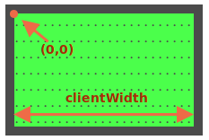

球具有 position:absolute。这意味着它的 left/top 坐标是从最近的具有定位属性的元素开始测量的，这个元素即 #field（因为它有 position:relative）。
坐标从场（field）的左上角内侧开始：

内部的场（field）的 width/height 是 clientWidth/clientHeight。所以场（field）的中心坐标为 (clientWidth/2, clientHeight/2)。
……但是，如果我们将 ball.style.left/top 设置为这种值，那么在中心的会是球的左上边缘，而不是整个球：
ball.style.left = Math.round(field.clientWidth / 2) + 'px';
ball.style.top = Math.round(field.clientHeight / 2) + 'px';这是它将显示出来的效果：
[iframe height=180 src="ball-half"]
为了使球的中心与场（field）的中心重合，我们应该把球向左移动球宽度的一半，并向上移动球高度的一半：
ball.style.left = Math.round(field.clientWidth / 2 - ball.offsetWidth / 2) + 'px';
ball.style.top = Math.round(field.clientHeight / 2 - ball.offsetHeight / 2) + 'px';现在，球终于居中了。
当 `<img>` 没有 width/height 时，代码将无法可靠地工作：
```html
<img src="ball.png" id="ball">
```当浏览器不知道图片的 width/height（通过标签 attribute 或 CSS）时，它会假定它们等于 0，直到图片加载完成。
因此，在图片加载完成之前，ball.offsetWidth 的值为 0。这会导致上面的代码中会有错误的坐标。
在第一次加载完成后，浏览器通常会缓存该图片，并在下一次加载时，浏览器会立即拥有该图片的大小。但是在第一次加载时，ball.offsetWidth 的值为 0。
我们应该通过在 <img> 中添加 width/height 来解决这个问题：
<img src="ball.png" *!*width="40" height="40"*/!* id="ball">……或者在 CSS 中提供大小：
#ball {
width: 40px;
height: 40px;
}